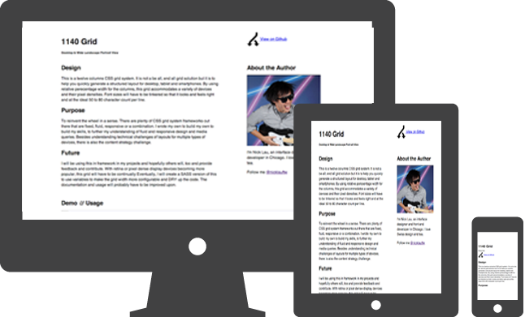
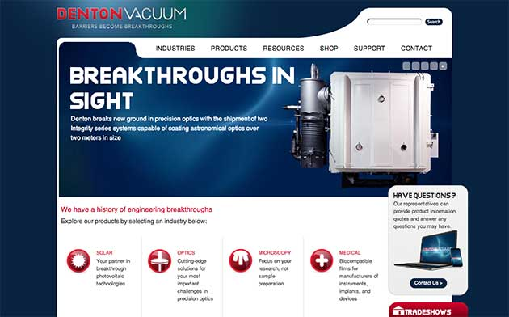

I'm Nick Lau, a Chicago
designer & developer.
Posts/Recent Thoughts
-
10 May 2013
Work/Selected Projects

1140 Responsive Grid
A simple, responsive CSS grid that powers many of my projects including this site.
Visit Project

Denton Vacuum
Denton Vacuum is a manufacturer of equipment that applies thin films on to materials. The website is built on a custom Ruby on Rails CMS.
Visit Site